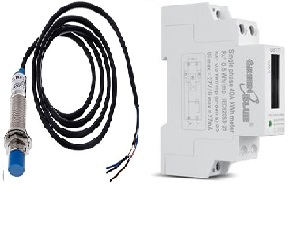
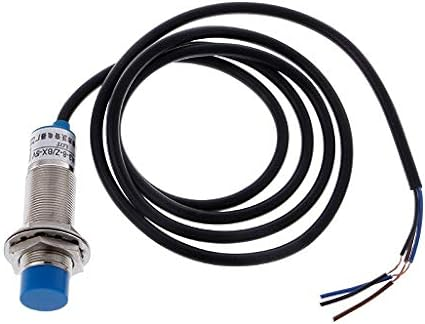
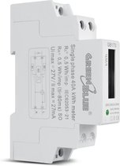
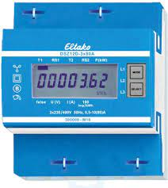
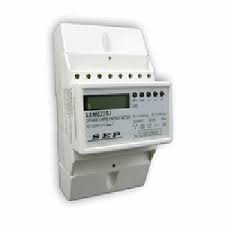
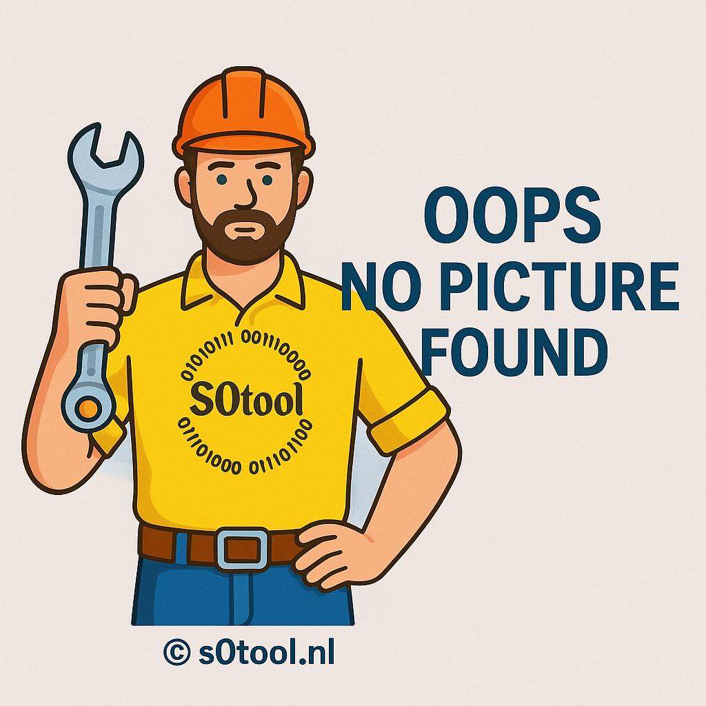
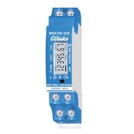
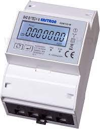

Installation
Flash S0tool firmware directly from your browser. Requires Chrome or Edge and a USB cable.
Before you start: Install USB drivers for your Wemos D1 mini. See Troubleshooting if your device is not detected.
Step-by-step
- Select the configuration matching your hardware below.
- Connect your Wemos D1 mini via USB to your PC.
- Click Connect — select the USB serial port.
- Choose Install S0tool, then click Install.
- If it fails, hold the boot button on the device and try again.
- After flashing, connect to your 2.4 GHz Wi-Fi network.
Done! Home Assistant will auto-discover the S0tool under Settings → Devices & Services.
Standard Configurations

Standard
Watermeter (NPN) + kWh (50-100ms)

Watermeter only
NPN sensor only

kWh Meter only
S0 pulse input (50-100ms)
Special Configurations

DSZ12D
Special config for DSZ12D

LEM022SJ
400 impulse config

Flux & Puls
Flux and puls meters

wsz15d32a + Water
Combined config

sdm72d + Water
Combined config
S0 Watermeter
Special S0 config
Puls Water Internal
Internal resistor D2 & D5
KWH + Water Test
Debug mode D2 & D5
Standard Flux
Dekaim Flussostato Acqua
Connect to Home Assistant
Option 1 — During installation
After Wi-Fi setup the installer offers a direct link to add the device to Home Assistant.
Option 2 — Auto Discovery
S0tool appears automatically under Settings → Devices & Services if on the same network.